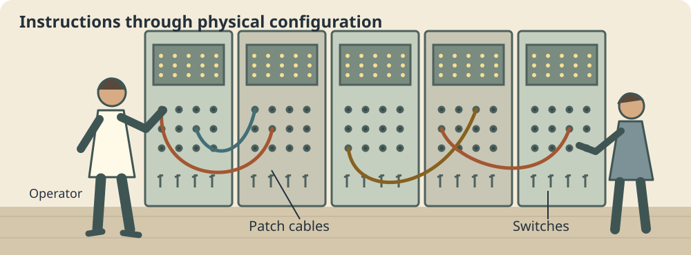
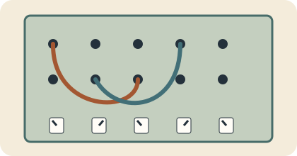
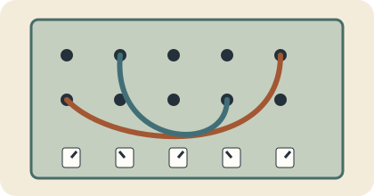
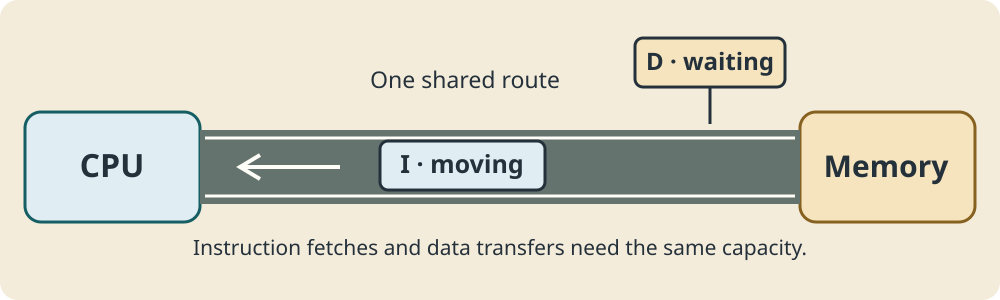
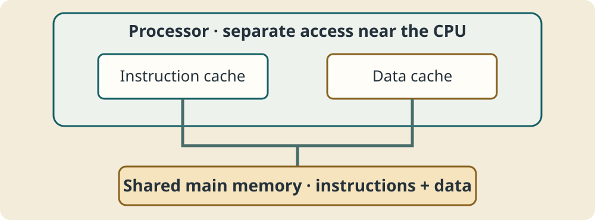

01 · Stored-program architecture
How do you tell a computer what to do?
A computer needs instructions. How does it get them?

Changing the task could mean changing the machine’s control setup.
Historical context
This is an illustrative scene, not a reconstruction of every early computer. The Computer History Museum’s ENIAC account describes plugboard-style programming cables. You do not need dates or historical names for this lesson.
02 · Stored-program architecture
Changing the program could mean changing the machine


- STOP
- Change cables or switches
- Test the configuration
- Run again
In this kind of setup, program instructions were not simply held in ordinary memory ready to be replaced like modern software. Reconfiguration could take substantial effort.
The stored-program breakthrough
03 · Stored-program architecture
The stored-program breakthrough
What if the instructions themselves could be stored as data in memory?
Before
External control configuration
External control configuration
Memory
I Program instructions
D Values being processed
CPU
Fetch and execute
Fetch and execute
A stored-program computer stores program instructions in memory so the processor can fetch and execute them.
To run another program, load different instructions rather than physically reconfiguring the machine’s control setup. Both architectures we will study can store programs.
04 · Stored-program architecture
From storage to memory to CPU
Secondary storage
Load →
game.exeKept for later use
RAMI · program instructionsD · program data
Fetch →
CPUExecute instructions
Programs can be stored, loaded into memory, and then executed.
This is a familiar general-purpose computer example. Instructions do not permanently live in RAM: RAM normally loses its contents without power. Other systems may execute instructions from non-volatile program memory.
05 · Stored-program architecture
Instructions are represented as data too
1010 0101I · instruction
0000 0101D · value
0110 0011I · instruction
0000 0011D · value
Instructions and data are both represented using binary patterns. How the system interprets a pattern gives it meaning.
The labels show the intended roles in this example, not physically different kinds of bits. The instruction patterns are illustrative, not a real instruction-set encoding.
06 · Stored-program architecture
The stored-program computer
Keep this machine in view. We will change what is highlighted, then change its memory arrangement. The CPU processes; memory stores.
Von Neumann architecture
07 · Stored-program architecture
Von Neumann architecture
Von Neumann architecture uses shared memory for program instructions and data.
The diagram is the conventional simplified model. A shared memory system/address space does not mean exactly one physical memory chip.
08 · Stored-program architecture
CPU zoom: Control Unit
CoordinateInterpret what must happen → direct the required operations.
For an addition, the Control Unit coordinates getting the values and directing the operation. It does not perform the arithmetic itself.
09 · Stored-program architecture
CPU zoom: ALU
5 + 3 = 85 > 3 → true1 AND 0 → 0
Addition, subtraction, comparisons and logical operations are examples of ALU work.
10 · Stored-program architecture
CPU zoom: Registers
Registers temporarily hold values or instructions currently being worked with.
They are not the same as main memory or a disk. Named registers such as PC, MAR, MDR and ACC are taught in the later instruction-cycle and register lessons.
13 · Stored-program architecture
One road, two kinds of traffic

Instructions and data compete for access to the shared memory/pathway. This competition is contention.
The metaphor is about a shared resource, not physical vehicles or a rule that the CPU can do nothing else while data moves.
14 · Stored-program architecture
What is the Von Neumann bottleneck?
CPU demandI · D · I · D · I
Limited transfer capacityShared memory pathway
Possible consequenceRequests wait; useful work may be delayed
Processor performance can be limited by the rate at which instructions and data can be transferred between CPU and memory.
This is a potential throughput limitation. Its importance depends on the workload and memory system; it does not mean a CPU can literally do only one thing at once. A faster CPU alone may still have to wait for memory.
15 · Stored-program architecture
Watch a tiny program run
LOAD AADD BOUTPUTA = 5 · B = 3
Readable pseudo-instructions: LOAD A means use the value at A; ADD B means add the value at B. These names are not a real assembly-language lesson.
Ready. Use Step to follow the highlighted paths.
The sequence deliberately separates instruction fetches from value accesses. Detailed decode stages and named register transfers come later.
Harvard architecture
16 · Stored-program architecture
What if instructions and data had separate paths?
Ready. Use Step to follow the highlighted paths.
What could be gained by separating them?
17 · Stored-program architecture
Harvard architecture
Harvard architecture stores instructions and data separately and uses separate pathways for them.
The classic model separates instruction/data memories and their address spaces. It remains a stored-program architecture: instructions are held in program memory.
18 · Stored-program architecture
Separate instruction and data access
Ready. Use Step to follow the highlighted paths.
Separate pathways can allow instruction and data accesses to occur independently or concurrently.
The data access shown is for an instruction already decoded; the instruction fetch is a forthcoming one. This does not remove dependencies or guarantee that every program runs faster.
19 · Stored-program architecture
Von Neumann vs Harvard visualiser
Ready. Use Step to follow the highlighted paths.
In Von Neumann mode, a ready instruction fetch and data access take turns on the shared path. In Harvard mode, a forthcoming instruction fetch and an independent data access can use separate paths together.
This visualiser explains memory organisation. It is not a CPU emulator, a timing benchmark or a promise of double performance.
Comparing architectures
20 · Stored-program architecture
Von Neumann vs Harvard
| Feature | Von Neumann | Harvard |
|---|---|---|
| Memory | Shared instructions and data | Separate instruction/data memories |
| Paths | Shared CPU–memory pathway | Separate instruction/data pathways |
| Access | Shared capacity can constrain access | Independent accesses can overlap |
| Organisation | Conceptually simpler; flexible shared space | More separated/specialised organisation |
| Possible context | Designs valuing a common memory space | Designs benefiting from frequent instruction/data access |
Choose from the given requirements, memory layout and trade-offs. Do not assume “PC = pure Von Neumann” or “embedded = Harvard”.
21 · Stored-program architecture
Are modern computers purely one or the other?

Modern general-purpose systems often present a Von Neumann-like common address space to software, while the processor may use separate instruction and data caches internally.
Real modern processors often combine ideas from both architectures. Keep the shared-versus-separate exam models clear, then recognise this practical variation.
More context
A cache holds fast-access copies near the CPU. Arm’s explanation of instruction/data caches gives a real example. Cache hierarchies belong in the later CPU performance lesson.
22 · Stored-program architecture
Identify the architecture
Identify each system, then justify it using architectural evidence.
System A
Instructions and data share memory and a CPU–memory path.
System B
Program memory and data memory each have their own pathway to the CPU.
System C · extension
Main memory is shared, but instruction and data caches near the processor have separate paths.
23 · Stored-program architecture
Common mistakes
- “Programs permanently live in RAM”
- Programs can be kept in secondary storage and loaded for execution; some systems use non-volatile program memory.
- “Harvard is just a faster Von Neumann”
- Its defining feature is separate instruction/data memories and pathways, not a guaranteed speed.
- “Modern PCs are pure textbook Von Neumann”
- Real designs can combine shared memory with separate instruction/data access near the CPU.
- “Instructions and data are different kinds of bits”
- Both are binary patterns. Interpretation gives them meaning.
- “The bottleneck means the CPU can only do one thing”
- It concerns shared memory/path bandwidth, not a universal restriction on all CPU activity.
24 · Stored-program architecture
Architecture in one picture
Stored-program idea: instructions held in memory for the processor to fetch and execute.
Von Neumann
Harvard
Modern systems often combine elements of both. Describe the memory and pathways in the question.
Practice
25 · Stored-program architecture
Check your understanding
Answer all 12 questions, then check your score. Aim for 9 correct. Your choices and best score save in this browser.
26 · Stored-program architecture
Exam-style practice
Use memory and pathway evidence, explain consequences and apply your judgement. These are practice questions, not an official mark scheme.
Draft answers save automatically in this browser.
Question 1
Explain what is meant by stored-program architecture.
Show answer guide
- Explain that instructions are stored in memory and the processor can fetch and execute them.
- Link this to changing tasks by changing the stored program rather than physical control configuration.
- Use an example of loading a different program; do not claim instructions permanently remain in RAM.
Question 2
Explain two roles of components within a Von Neumann architecture.
Show answer guide
- For example, the Control Unit coordinates execution and directs operations; the ALU performs arithmetic/logical work such as adding 5 and 3.
- Alternatively explain registers as very fast temporary storage or memory as the shared store for instructions/data.
- Develop two component → role → example links rather than listing names.
Question 3
Explain why sharing one memory/pathway for instructions and data can limit performance.
Show answer guide
- Both instruction fetches and data transfers require access to shared memory/path capacity.
- When requests compete, one may wait while another transfer uses the path, limiting supply to the CPU.
- Apply this to frequent instruction/data access: useful processing may be delayed even if the CPU could operate faster. Do not equate the bottleneck with “only one thing at once”.
Question 4
Explain two differences between Von Neumann and Harvard architectures.
Show answer guide
- Memory: a shared instruction/data store/address space versus separate instruction/data memories/address spaces.
- Pathways: a shared route versus independent instruction/data paths. Explain contention versus possible concurrent access.
- Connect each difference to its consequence; both architectures can store programs. Avoid counting “Harvard is faster” as an unexplained difference.
Question 5
Analyse why a designer might use a Harvard-style architecture for frequent instruction and data access.
Show answer guide
- Separate paths can allow a forthcoming instruction fetch and an independent data access to overlap, reducing a source of contention.
- Apply this to the frequent traffic specified, explaining why it could reduce waiting and improve useful throughput.
- Weigh separate memory/interface organisation and flexibility against the expected benefit. Other dependencies and performance limits remain.
- Reach a conditional judgement based on the actual workload, not a guaranteed speed ratio.
Question 6
Compare Von Neumann and Harvard architectures and discuss their suitability for different computer systems.
Show answer guide
- Compare shared versus separate instruction/data memories and pathways accurately.
- A common memory pool can support flexible program/data sizes and conceptually simpler organisation, but shared traffic can cause contention.
- Harvard-style separation can suit workloads with useful concurrent instruction/data accesses, with more specialised organisation to consider.
- Apply the reasoning to requirements; a device name alone does not establish its architecture or prove suitability.
- Acknowledge that real systems may combine shared main memory with separate instruction/data caches. Finish with a justified trade-off rather than claiming one model is always best.